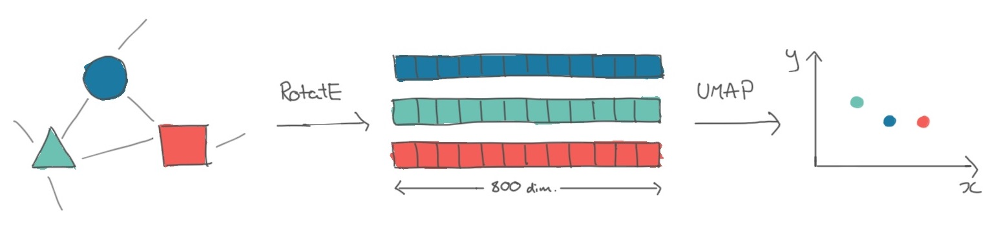
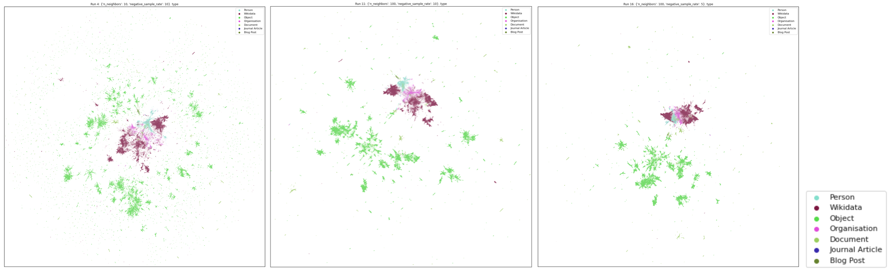
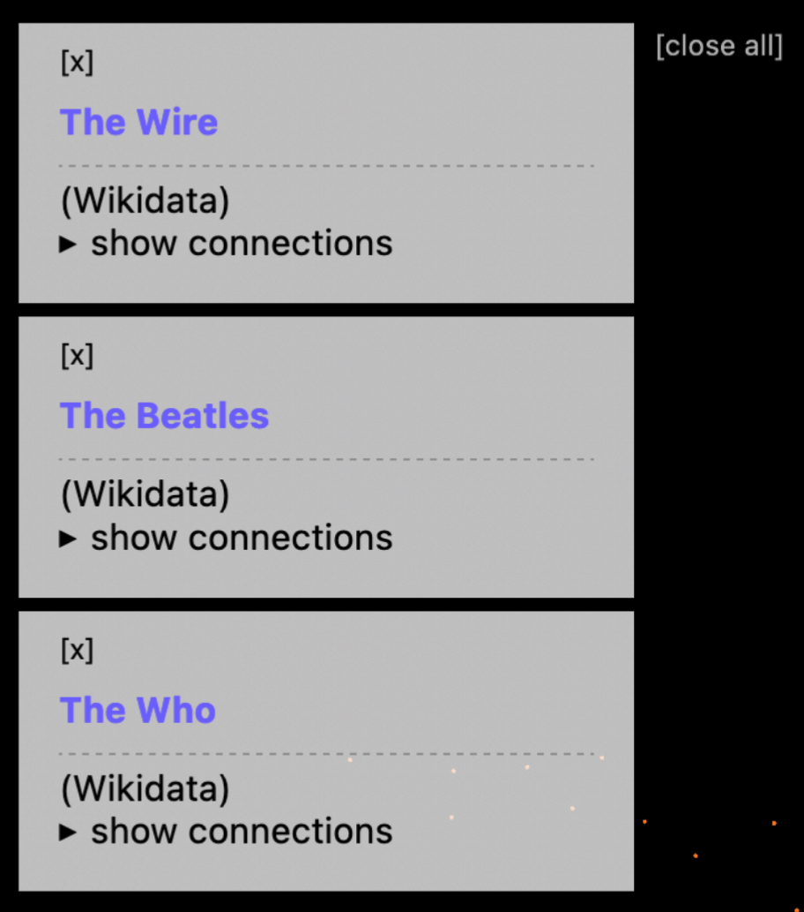

Visualising a Museum Knowledge Graph with Knowledge Graph Embeddings and UMAP
Kalyan Dutia
This blog post introduces an interactive visualisation of a knowledge graph created from the Science Museum Group’s collection, blog and journal. If you’re not interested in the technical work behind the visualisation, you can play with it here.
Contents:
 Interactive visualisation of knowledge graph created from SMG’s collection, blog and journal (see top of page for link).
Interactive visualisation of knowledge graph created from SMG’s collection, blog and journal (see top of page for link).
In the Heritage Connector project, we’re building a knowledge graph from museum collections using machine learning. Some of the potential benefits we envisioned this knowledge graph could bring were:
- enabling macro-views of the whole collection;
- new and more flexible groupings of items within and across collections;
- richer onward journeys from one collection record, blog post or journal article to the next;
- new entry points from which to begin exploring the collection; and
- new forms of interface, to provide an alternative to keyword search discovery.
Some research into existing interfaces highlighted existing imaginative interfaces for cultural heritage, and we also thought about the challenges in presenting such information in a cultural heritage context.
After this research and some discussion within the team, we decided that we’d begin building three different interfaces. Having first versions of each interface would then give us blueprints to develop on, challenge, and share with cultural heritage practitioners. The interfaces we decided on were:
- A metadata explorer - where users can view the new connections that have been created from an SMG collection record, blog or journal page to other pages or external sources. We implemented this as a browser bookmarklet, and hope that some of its functionality will be built into the SMG collection website.
- A keyword search - which enables users to perform a text search across the new metadata, for example the new Wikidata entities.
- An interactive visualisation of the whole collection - what this blog post is about!
 Demo of ‘metadata explorer’ bookmarklet.
Demo of ‘metadata explorer’ bookmarklet.
Developing the Visualisation
Visualisations like this one tend to follow the same recipe: get some embeddings, which are vector representations of each thing; reduce the dimension of these embeddings to 2D or 3D; then plot these reduced embeddings.
 Transformation of entities in a knowledge graph to knowledge graph embeddings, to plottable 2D projections of these embeddings.
Following this framework, our first step was to turn entities in the knowledge graph into vectors. The family of approaches to do this is called knowledge graph embeddings, which are produced by specially-designed neural networks (if we just had text data, we could use a language model to produce word or sentence embeddings). As we knew we wanted to visualise these embeddings, we experimented with the translational family of models, i.e. those where the triple s->p->o corresponds to a translation in vector space between s and o.
Fortunately for us, a range of Python libraries exist to produce knowledge graph embeddings from a list of triples. After some experimentation with PyKEEN, we ended up using DGL-KE as it was optimised for large knowledge graphs such as ours. Running some hyperparameter tuning led us to using a RotatE model which produced an 800-dimension vector for each of the 645,565 entities in the knowledge graph, and a 400-dimension vector for each of the 53 relations.
To validate that this model seemed effective for our purposes (recommendation and visualisation), we quickly looked at some nearest neighbour visualisations and a dimensionality-reduced plot of the embeddings (Jupyter notebook).
The next step was to condense the 800-dimensioned entity vectors into 2 dimensions, so we could plot them. Dimensionality reduction models like the one we used have several parameters which you can tweak to change the final layout of the plot, such as how far apart clusters are. Using a GPU-accelerated implementation of UMAP, a popular dimensionality reduction model, we ran the model multiple times with different sets of parameters, then chose the version of the model which produced the best looking plot with respect to it being a) condensed enough to fit on a screen, but not too condensed, and b) clustering together existing SMG collection categories.
 A few examples of how changing the UMAP parameters affects the layout of the visualisation. This article is a great interactive introduction to the different parameters.
Finally, we needed to find a way to plot ~650,000 points in an interactive app on the website. Fortunately, many people had done this before us! We chose to use Colin Eberhardt’s Hathi Trust library visualisation as a starting point, and getting this up and running was as easy as creating a JSON file with the embeddings in the required format.
In order to make the interface more useful for browsing a museum collection, we decided to add an attribute pane, which would show more information about a record if its dot was clicked on. Soon we extended this to allow showing multiple attribute panes at a time, enabling people to start to collect and compare different museum records, blog posts, Wikidata pages and journal articles. We also added a legend to make the plot clearer.

An example of collecting and comparing multiple records in the knowledge graph visualisation.
First Observations on the Demos
As the work we’ve written about here has presented new, experimental ways of navigating the collection, it’s important to us to get feedback on them from a range of audiences. Naturally, I started with the Heritage Connector team (we are also consulting SMG’s curatorial team, and exposing these interfaces to developers for a hackathon).
Here are some of their observations:
On the knowledge graph visualisation:
- Existing SMG collection categories mostly cluster together in ways that make sense: for example, the clusters for Photographic Technology, Cinematography and Photographs are positioned next to each other.
- Related objects and archival documents tend to sit alongside each other.
- Wikidata pages are clustered with similar Wikidata pages, rather than the SMG records which refer to them. This leads to quite neat clusters of ‘bands & albums’ and ‘events’.
- People, companies and organisations cluster amongst Wikidata, whereas few objects appear in the Wikidata cluster.
- There are some great examples of clusters of blog posts, documents, objects and companies, but this kinds of feature isn’t consistent throughout the visualisation. This implies that mechanisms other than visualisation or KG embeddings might be useful to help users navigate the collection.
- The visualisation is a hard interface to use if you’re looking for something specific, that you know exists in the knowledge graph. It could be improved for this use case by adding text search.
On the new connections displayed through these interfaces:
- Blog posts and journal articles are rich with links to Wikidata, objects, people, orgs, etc generated through NER and entity linking.
- Even where there is thin data, there are some encouragingly accurate links, for example here to Barker coach makers, where a correct link is made to the coachbuilder’s Wikidata page, which only has a single word in its title.
Other observations:
- Related objects are very strong – as seen in the bookmarklet.
- Where there are false positives these are usually obvious to the user, and so limited in their negative impact so long as links are framed correctly.
Next Steps
In the closing months of the project, we’re primarily looking to extend our existing work to find out how these techniques work across museum collections, by processing the V&A’s digital collection. New versions of these demos will soon be available, showing the potential (or not!) of these techniques for cross-collection linking.
We’re also gathering feedback from SMG curators, and running a hackathon with digital media agency Cogapp. Time permitting, we’ll also look into metadata search as a third demo.
Look out for our final set of blog posts and our final event in the coming months!